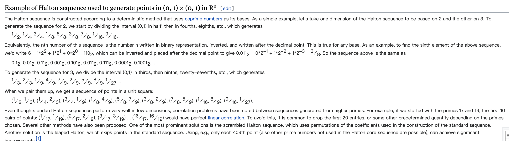

TAA Implementation vs. DLSS
- antialiasing
- aliasing
- type of rendering aliasing
- antialiasing
- 熟悉的奈奎斯特采样定理
- reconstruction
- more samples
- Morphological Methods
- pipeline
- jitter your view frustum
- motion vector
- precache scene depth and color(color transformation)
- history sampling
- history rectification
- current frame sampling
- current filtered color sharpen
- blend ratio
- tone mapping
- sharpen
- others
- why talking with TAA
- features
- performance
- theory
- pipeline
- input
- sub-pixel jitter sample pattern
- frosbite DLSS integration
antialiasing
aliasing
aliasing occurs when a signal is being sampled at too low a frequency
type of rendering aliasing
geometry aliasing
shading aliasing
antialiasing
熟悉的奈奎斯特采样定理
要想信号可以被原样还原, the sampling frequency has to be more than twice the maximum frequency of the signal to be sampled, 否则还原出来的信号会混叠。
但是rendering里的三维空间 is normally never band-limited when rendered with point samples, 所以完全解决走样问题是几乎不可能的。
reconstruction

screen space antialiasing
more samples
SSAA (Super Sampling Antialiasing)
- each sample has to run through a pixel shader
MSAA (Multisampling Antialiasing) vs EQAA(Enhanced Quality Antialiasing)
- the pixel shader is evaluated only once for each object fragment applied to the pixel.
TAA
Morphological Methods
FXAA(Fast Approximate Antialiasing)

SMAA(Subpixel Morphological Antialiasing)
TAA
pipeline
post process highlight_object 和 DOF之后。
jitter your view frustum

- low discrepancy sequence the proportion of points in the sequence falling into an arbitrary set B is close to proportional to the measure of B.  https://en.wikipedia.org/wiki/Low-discrepancy_sequence
- adjust projection matrix

motion vector
precache scene depth and color(color transformation)
precache
tone mapping


linear --> YCoCg
a simple transformation of an associated RGB color space into a luma value (denoted as Y) and two chroma values called chrominance green (Cg) and chrominance orange (Co).
history sampling
motion vector sampling
当镜头的移动时，可能会导致物体的遮挡关系发生变化，比如一个远处的物体原来被前面的物体遮挡住，现在因为镜头移动而忽然出现，这时采样 Motion 偏移得到的位置，上帧中其实是没有渲染的数据的。因此为了得到更加平滑的数据，可以在当前像素点周围判断深度，取距离镜头最近的点位置，来采样 Motion Vector 的值，这样可以减弱遮挡错误的影响。
history filtering
Resampling blur happens when motion causes target pixels to reproject to fractional pixel locations in the previous frame. https://zhuanlan.zhihu.com/p/450936588
history rectification
neighborhood bounding box of current frame
rectification
current frame sampling

current filtered color sharpen
- luma contrast 越小减少filtering的作用
blend ratio
- luma diff
- velocity
- velocity的大小
- velocity偏离pixel中心多少
tone mapping
YCoCg --> linear HDR -> LDR
sharpen
others
transparent object / particles
small object blurring
- moving character using last render result as previous input but not previous taa output
- using more result of current frame
flickering
https://zhuanlan.zhihu.com/p/71173025 如果上一帧深度与当前帧深度差距大，那就可以顺理成章的判断出上一帧与当前帧在这个像素点上产生了Flicker，这时候直接强行取消Clamp，使两像素融合到一起，也就不会因为Clamp而产生闪烁了。
art of balancing
DLSS
why talking with TAA
- antialiasing
- TAA upsampling
features

performance
https://developer.nvidia.com/rtx

theory
problem
single image super-res
multi-frame super-res
pipeline
input
- color buffer any format
- motion vectors RG32_FLOAT / RG16_FLOAT
- depth buffer
- exposure value (for HDR)
- previous output buffer(optional) only RGBA16F
sub-pixel jitter sample pattern
- halton
- pattern phase
- TAA 8 samples
- DLSS
Total Phases = Base Phase Count * (Target Resolution / Render Resolution) ^ 2


{kind=link}
{kind=link}
{kind=link}
{kind=link}
{kind=link}
{kind=link}
{kind=link}
{kind=link}
{kind=link}
{kind=link}
{kind=link}
{kind=link}
{kind=link}
{kind=link}
{kind=link}
{kind=link}
{kind=link}
{kind=link}
{kind=link}
{kind=link}
{kind=link}
{kind=link}
{kind=link}
{kind=link}
{kind=link}
{kind=link}
{kind=link}
{kind=link}
{kind=link}
{kind=link}
{kind=link}
{kind=link}
{kind=link}
{kind=link}
{kind=link}
{kind=link}
{kind=link}
{kind=link}
{kind=link}
{kind=link}
{kind=link}
{kind=link}
{kind=link}
{kind=link}
{kind=link}
{kind=link}
{kind=link}
{kind=link}
{kind=link}
{kind=link}
{kind=link}
{kind=link}
{kind=link}
{kind=link}
{kind=link}
{kind=link}
{kind=link}